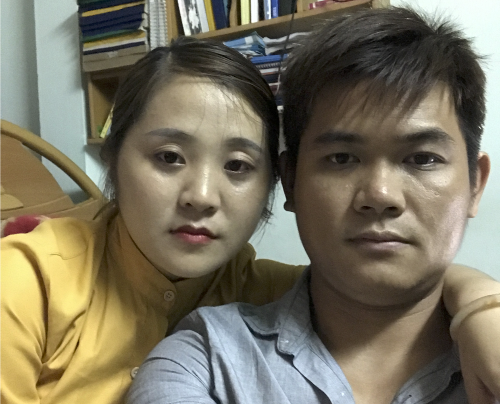

U.S. Consulate General Ho Chi Minh City
Immigration Visa Unit
04 Le Duan Street, District 1, Ho Chi Minh City, Vietnam.
Case Number: HCM2017630011
Petitioner: Tommy Dang
Current cellphone: (+84) 1653-220-864
Applicant: Ngan Thi Tran
Current cellphone: (+84) 1653-220-864
Contact
Supporting documents
Timeline
Home
ABOUT
I am an assistant professor and director of the interactive Data Visualization Lab (iDVL) at Texas Tech University.
CURRENT PROJECTs
Network visualization: Developing visual systems for interacting with biological networks across multiple layers of abstraction.
Visual features: Adapting/extending/using visual features to cluster and provide an meaningful overview of complex data.
The effects of an instructional avatar's gestures on teaching foreign languages: The goal of this project is to determine the role instructional gesturing plays in second language acquisition.
RESEARCH INTERESTs
Developing methods and tools for visual analytics - an integrated approach combining visualization, human factors and data analysis to derive insight from massive, dynamic, and ambiguous data.
EDUCATION
2010-2014: Phd in Computer Science, University of Illinois at Chicago. My PhD advisor was Prof. Leland Wilkinson
2008-2009: M.Sc. in Computer Science, University of Illinois at Chicago
2006-2008: M.Sc. in Computer Engineering, Politecnico di Milano, Italy
2001-2006: B.Sc. in Computer Science, University of Technology, Vietnam
WORK EXPERIENCE
2016-Present: Assistant Professor at Texas Tech University, Lubbock, Texas
2014-2016: Postdoctoral researcher at Electronic Visualization Laboratory, Chicago
2015-2016: Consultant in network visualization for Objectivity Inc., San Jose, CA
2014-2015: Consultant in data visualization for Skytree Inc. - The Machine Learning Company
2008-2014: Research assistant in the Computer Science Department at University of Illinois at Chicago
2012: [J3] Tuan Dang, Anushka Anand, and Leland Wilkinson. TimeSeer: Scagnostics for High-Dimensional Time Series. IEEE Transactions on Visualization and Computer Graphics 19(3), TVCG 2012.


 DOI
2010: [J1] Tuan Dang, Leland Wilkinson, and Anushka Anand. Stacking Graphic Elements to Avoid Over-Plotting. IEEE Transactions on Visualization AndComputer Graphics 16(6), InfoVis 2010.
DOI
DOI
2010: [J1] Tuan Dang, Leland Wilkinson, and Anushka Anand. Stacking Graphic Elements to Avoid Over-Plotting. IEEE Transactions on Visualization AndComputer Graphics 16(6), InfoVis 2010.
DOI
INVITED TALKS
2017: Visualizing Biological Pathways. Bio-IT World Conference & Expo. Cambridge Healthtech Institute in Boston, MA
2016: Data visualization and visual analytics. TTU Computer Science departmental seminars. Lubbock, TX
2015: Feature-based Visual Analysis. Chicago Chapter ACM. Chicago, IL
2014: Visualizing relationships in massive and dynamic data. Skytree tech talk. San Jose, CA
2013: Interactive Visual Analysis of Images. Doctoral Colloquium, IEEE VisWeek. Atlanta, GA
ACTIVITIES
2016-present: Graduate Program Committee (Department Service)
2015-2016: Website chair of the Symposium on Biological Data Visualization (BioVis 2015 and BioVis 2016)
Reviewer for:
- 2017: EG/VGTC Conference on Visualization, EuroVis 2017 (4 papers + 2 STARs reports)
- 2017: IEEE Pacific Visualization Symposium, PacificVis 2017 (6 papers+ 3 visualization notes)
- 2016: IEEE Scientific Visualization, SciVis 2016 (1 paper)
- 2016: IEEE Visual Analytics Science and Technology, VAST 2016 (4 papers)
- 2016: IEEE Information Visualization InfoVis 2016 (4 papers)
- 2016: Workshop on Visualization in Practice VIP 2016 (1 paper)
- 2015: EG/VGTC Conference on Visualization, EuroVis 2016 (5 papers)
- 2015: IEEE Pacific Visualization Symposium, PacificVis 2016 (3 papers)
- 2015: IEEE Information Visualization, InfoVis 2015 (1 paper)